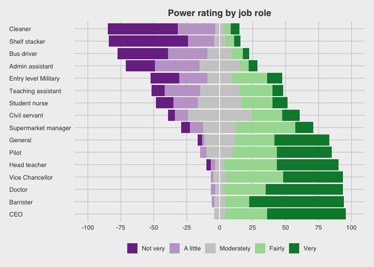
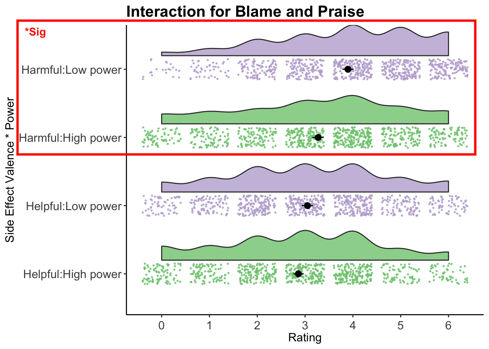

For harmful side-effects, people with less power are judged to deserve more blame than those with higher power.
Exploring the side-effect effect.
Bradley J. Kennedy
@bradpsych
b.kennedy@chester.ac.uk
Dr. Annie Scudds, Prof. Moira Lafferty, & Dr. Suzanne L. K. Stewart
School of Psychology, University of Chester
Background
Knobe (2003) showed that people are more likely to say that harmful side effects are brought about intentionally when compared with helpful side effects. Furthermore, people assign more blame for harmful side effects than they do praise for helpful side effects. Observers appear to utilise the moral valence of actions’ unintended consequences to determine intentionality, and deserved praise and blame.
Previous work has demonstrated that character descriptions can moderate the side-effect effect (SEE; Stewart et al. 2021) such that participants’ responses can be influenced by the congruency between the agent’s character and the outcome of their actions.
The current research investigates whether varying more fine-grained specific agent traits moderates the SEE in a similar manner.
Replication of the SEE
Replication in a UK Sample:
More blame (𝑀=4.80, 𝑆𝐷=1.35) in harm condition, 86% said intentional p < .001
Little praise (𝑀=2.11, 𝑆𝐷=1.74) in help condition, 93% said not intentional p < .001
Difference highly significant 𝜒2 (1,N=88)=29.9, p<.001, d=1.43 95% CI [0.92, 1.95]
Larger effect sizes than original (Replication: d = 2.45 & d = 1.70; Original: d = 1.45 & d = 1.55)
Vignette example:
The vice-president of a company went to the chairman of the board and said, ‘We are thinking of starting a new program. It will help us increase profits, and (but) it will also help (harm) the environment.’ The chairman of the board answered, ‘I don’t care at all about helping (harming) the environment. I just want to make as much profit as I can. Let’s start the new program.’ They started the new program. Sure enough, the environment was helped (harmed). - Knobe (2003)
- How much praise (blame) does the chairman deserve for what he did? (0-6; None-Lots)
- Did the chairman intentionally help (harm) the environment? (Yes/No)
Pilot Study
In order to develop vignettes for other experiments, this online study examined current social perceptions of a variety of job roles and sectors of work.
Example Variables:
Jobs: Cleaner, Bus Driver, Pilot, Head Teacher, CEO
Sectors: Health, Military, Media, Government
Characteristics: Powerful, Trustworthy, Honest, Skillful

Figure 1: Ratings of Powerfulness for a selection of Job roles
Explore the interactive results of the pilot study: apps.bradk.co.uk/pilotdata
The Job Role of the Agent
Overview: It was considered that the Chairman/CEO character in the original Knobe (2003) study was influencing participants’ decision making as the job role has the stereotype/prototype of large amounts of control and responsibility. Using pilot data, 64 novel vignettes were developed utilising the most prominently featured job roles from the pilot study.
This study followed a similar paradigm as the Knobe (2003) study but modified the intention question response system to match the Likert 0-6 response on praise/blame question. This modification allowed the use of Cumulative Link Mixed Models (CLMMs) for analysis.
Vignette modification: Job role was used twice in the vignette and once within each question. E.g. “A supermarket manager / shelf stacker is considering changing…”
Result: N = 100. The model showed the typical SEE was present in all conditions (p < .001). However, the agent’s job role did not moderate the SEE in praise/blame ratings (p = .823) and intention ratings (p = .472).
The Sex of the Agent
Overview: To further investigate the influence of the agent characteristics, the aim of this study was to manipulate the vignettes by modifying the sex of the agent.
Vignette modification: A gendered name and pronouns were used twice each in the vignette E.g. “Oliver/Emma is a supermarket manager and he/she is considering changing …”. The name was also used in both the intention and praise/blame questions.
Result: N = 100. The model showed the SEE was present in all conditions (p < .001). However, the sex of the agent did not moderate the SEE in praise/blame ratings (p = .803) and intention ratings (p = .619).
The Power of the Agent
Overview: Research has shown that the level of power the agent possesses (as a result of their position; chief/commoner) impacts the SEE (Robbins et al., 2017). To investigate this further, the level of power was modified to be more salient and not just inferred as a result of a job role.
Vignette modification: “A supermarket manager is considering changing the layout of the aisles. The manager is very/not very powerful and has lots of/little influence with the chain’s management board.”

Figure 2: Distribution of Blame (Purple) and Praise (Green) ratings for Helpful/Harmful outcomes by level of Power
Result: The agent’s level of power moderated the SEE, such that those with less power were judged to deserve more blame for their actions than those with high levels of power, for harmful side-effects. * p = .0017
Next Steps…
Future work will investigate how participants utilise information about agents’ power to understand the results, for example, the possible role of norm violations and participants’ own view of cost-benefit analyses. To investigate further, a larger and more diverse sample using Prolific recruitment will be used.
Understanding the SEE has applications to real world affairs that include jury decision making, business/brand image, product marketing and advertisement.
Find out more and/or get future updates by scanning the QR code below or visit: bradk.co.uk/see
References
Allaire, J., Xie, Y., McPherson, J., Luraschi, J., Ushey, K., Atkins, A., Wickham, H., Cheng, J., Chang, W., & Iannone, R. (2022). Rmarkdown: Dynamic documents for r. https://CRAN.R-project.org/package=rmarkdown
Knobe, J. (2003). Intentional action and side effects in ordinary language. Analysis, 63(3), 190–194. https://doi.org/10.1093/analys/63.3.190
Robbins, E., Shepard, J., & Rochat, P. (2017). Variations in judgments of intentional action and moral evaluation across eight cultures. Cognition, 164, 22–30. https://doi.org/10.1016/j.cognition.2017.02.012
Stewart, S. L. K., Kennedy, B. J., & Haigh, M. (2021). Valence of agents and recipients moderates the side-effect effect: Two within-subjects, multi-item conceptual replications. Journal of Cognitive Psychology, 34(2), 289–306. https://doi.org/10.1080/20445911.2021.1971234
Thorne, B. (2019). Posterdown: Generate PDF conference posters using r markdown. https://github.com/brentthorne/posterdown